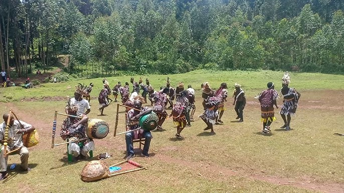

Cultural Gallery
Visual journey through Kisii cultural heritage


Discover the rich traditions, customs, and way of life of the Kisii people
The Kisii, also known as the Abagusii, are a Bantu ethnic group indigenous to Kisii and Nyamira counties in southwestern Kenya. They are known for their rich cultural heritage, agricultural practices, and vibrant traditions.
Population
Years of History
Explore the diverse elements that make up Kisii culture
Kisii traditional homes are circular structures with thatched roofs, built using local materials like mud, wood, and grass. These homes reflect the community's harmony with nature and practical architectural wisdom.
Kisii cuisine is based on agricultural products like bananas, millet, sorghum, and vegetables. Traditional dishes include ugali, traditional greens, and locally raised chicken prepared with indigenous spices.
Traditional Kisii music and dance play vital roles in ceremonies, celebrations, and storytelling. The community uses drums, flutes, and vocal harmonies to create rhythmic performances.
The Kisii are renowned for their soapstone carvings, basketry, and pottery. These crafts are not only functional but also serve as artistic expressions of their cultural identity.
Journey through the history of Kisii culture
Before 1900
The Kisii people established their agricultural communities, developing unique farming techniques and social structures that emphasized community cooperation and environmental harmony.
1900-1963
Despite colonial influence, the Kisii maintained their cultural practices, adapting to new circumstances while preserving traditional values and customs.
1963-1990
Post-independence Kenya saw a revival of Kisii cultural practices, with increased documentation and preservation efforts of traditional knowledge and customs.
1990-Present
Today, the Kisii culture continues to thrive, blending traditional practices with modern life while maintaining their unique identity in a globalized world.
Visual journey through Kisii cultural heritage
Important traditions and customs of the Kisii people
Traditional Kisii weddings involve elaborate ceremonies with dowry negotiations, cultural dances, and community celebrations that can last several days.
Children are given names based on circumstances of birth, time of day, or significant events. The naming ceremony involves blessings from elders.
Seasonal ceremonies mark planting and harvesting times, including prayers for good weather and thanksgiving for successful crops.
Traditional coming-of-age ceremonies that mark the transition from childhood to adulthood, involving teachings about cultural values and responsibilities.
Reverence for ancestors through rituals and offerings, believing that the spirits of the deceased continue to guide and protect the living.
Traditional justice systems involving council of elders who mediate disputes and maintain community harmony through customary law.
Visit our museum to experience authentic Kisii culture through interactive exhibits, traditional demonstrations, and cultural performances. Our knowledgeable guides will take you on a journey through centuries of rich heritage.